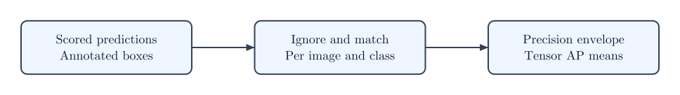
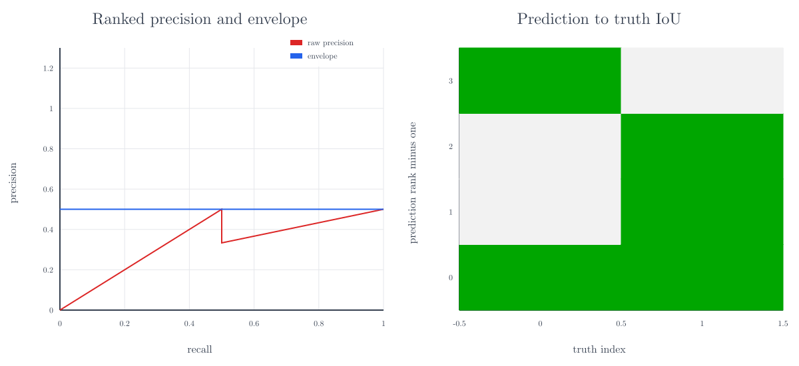
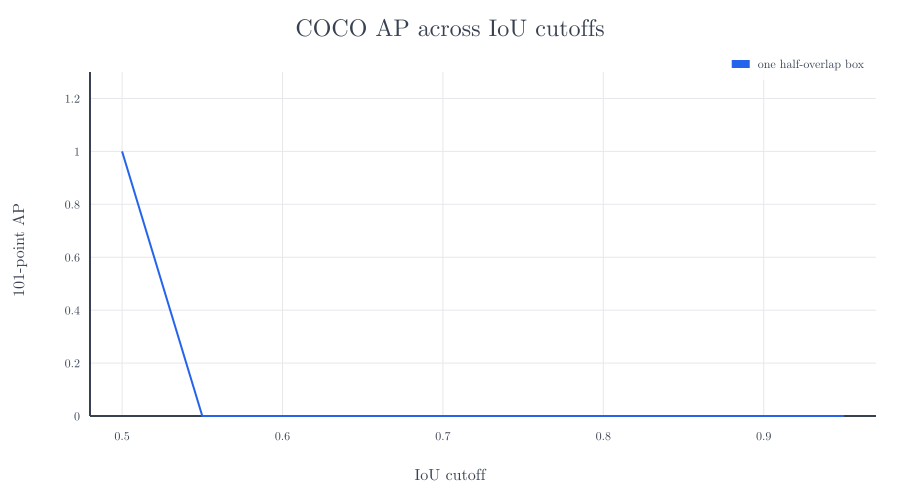
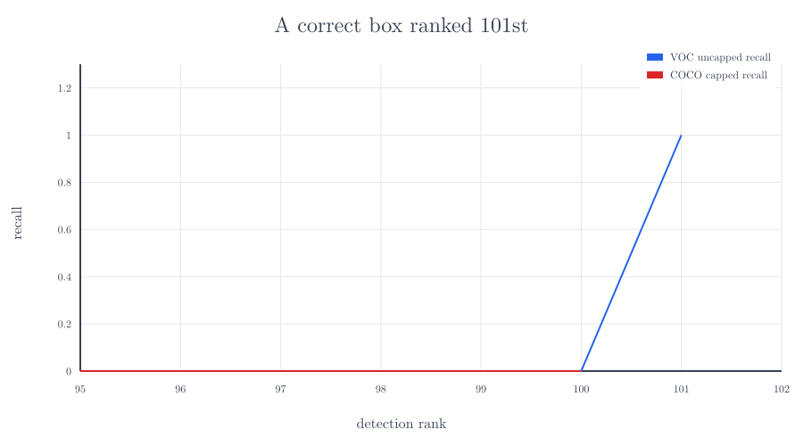

VOC and COCO box evaluation
Abstract
Detection evaluation must distinguish correct objects from duplicates, ignored annotations and unmatched predictions. This report derives tensor precision-envelope AP, checks VOC difficult objects and COCO crowds/caps on small fixtures, and provides an optional reader for the original externally predicted subsets. No real-dataset scores are claimed when those assets are absent.
Source example: examples/cpp/source/nn/1_convolutional_neural_networks/1.6_object_detection/detection_evaluation.cpp.
The method
Evaluation fixes model predictions and applies discrete matching, then tensor overlap, cumulative-count and recall-grid reductions. It needs no optimizer. VOC07 samples eleven recall thresholds and uses strict overlap; COCO-style box AP samples 101, includes equality and averages ten IoU cutoffs. These choices can produce different values for the same predictions.
The concept diagram below is drawn by dm::graphics::Diagram. Its editable C++
source is the complete block below; regeneration uses the same datamunge toolchain
as the numerical examples. Exports consume the saved local SVG.
#include <dm/dm.hpp>
int main() {
std::filesystem::create_directories("build");
dm::graphics::Diagram diagram;
diagram.node("n0", {0.0, 0}, "Scored predictions\nAnnotated boxes");
diagram.node("n1", {5.2, 0}, "Ignore and match\nPer image and class");
diagram.node("n2", {10.4, 0}, "Precision envelope\nTensor AP means");
diagram.edge("n0", "n1").edge("n1", "n2");
diagram.save_svg("build/detection_evaluation_concept.svg");
}
Simple examples: ranked detections and the precision envelope
For each category, detections sort by descending score. If detection k is a true
positive, cumulative true positives increase; precision is TP/(TP+FP) and recall
is TP/P, where P counts nonignored ground truths. A previously matched object
cannot earn a second true positive. The envelope at recall r is the largest
precision at any later attainable recall; integrating its recall changes gives
all-point AP. VOC2007 instead samples eleven recall thresholds; COCO samples 101.
Here the score order is false positive, true positive, duplicate, true positive.
With two targets, raw precision is [0,.5,1/3,.5], recall [0,.5,.5,1], and the
envelope is constantly .5. All three AP definitions give .5 for this fixture.
Architecture scope
This report defines detection matching and average-precision evaluation rather than a neural network. Its retained concept SVG shows that evaluation dataflow; detector architectures appear in the adjacent model reports.
#include <dm/dm.hpp>
int main() {
namespace n = dm::nn;
namespace m = n::models;
const std::vector<m::DetectionEvaluationTruth> truth = {{1, 0, {0, 0, 10, 10}},
{1, 0, {20, 20, 30, 30}}};
const std::vector<m::DetectionEvaluationPrediction> predictions = {
{1, 0, .99f, {40, 40, 50, 50}},
{1, 0, .9f, {0, 0, 10, 10}},
{1, 0, .8f, {0, 0, 10, 10}},
{1, 0, .7f, {20, 20, 30, 30}}};
const auto voc = m::EvaluateDetectionClass(predictions, truth, {1}, 0, .5, false),
coco = m::EvaluateDetectionClass(predictions, truth, {1}, 0, .5, true);
if (std::abs(voc.integral.item() - .5) > 1e-12 ||
std::abs(voc.interpolated.item() - .5) > 1e-12 ||
std::abs(coco.interpolated.item() - .5) > 1e-12)
return 1;
const auto tp = n::cumsum(n::from_vector(std::vector<double>{0, 1, 0, 1}), 0);
const auto raw = tp / n::arange(1, 5).to(n::DType::Float64);
std::print(
"| rank | score | recall | raw precision | envelope |\n|---:|---:|---:|---:|---:|\n");
for (int i = 0; i < 4; ++i)
std::print("| {} | {:.2f} | {:.3f} | {:.3f} | {:.3f} |\n", i + 1, predictions[i].score,
voc.recall.at({i}), raw.at({i}), voc.precision.at({i}));
auto curve = dm::graphics::RPlot::create();
curve
.lines(voc.recall.to_vector<double>(), raw.to_vector<double>(), "raw precision",
{220, 38, 38})
.lines(voc.recall.to_vector<double>(), voc.precision.to_vector<double>(), "envelope",
{37, 99, 235})
.title("Ranked precision and envelope")
.x_label("recall")
.y_label("precision")
.x_limits(0, 1)
.y_limits(0, 1.3);
auto overlap = n::plot_tensor_map(
n::reverse(
n::box_iou(
n::boxes_from_vector(std::vector<n::Box>{
{40, 40, 50, 50}, {0, 0, 10, 10}, {0, 0, 10, 10}, {20, 20, 30, 30}}),
n::boxes_from_vector(std::vector<n::Box>{{0, 0, 10, 10}, {20, 20, 30, 30}})),
{0}),
0, 1);
overlap.title("Prediction to truth IoU")
.x_label("truth index")
.y_label("prediction rank minus one")
.x_limits(-.5, 1.5)
.y_limits(-.5, 3.5);
std::filesystem::create_directories("build");
dm::graphics::RLayout::create(1, 2)
.add(curve)
.add(overlap)
.size(1200, 550)
.fit_panels()
.save_svg("build/detection_evaluation_precision.svg");
std::print("Integral AP {:.6f}; VOC07 AP {:.6f}; COCO 101-point AP {:.6f}. Line segments "
"join ranked samples; AP uses recall increments, not trapezoidal integration of "
"the red curve.\n",
voc.integral.item(), voc.interpolated.item(), coco.interpolated.item());
}| rank | score | recall | raw precision | envelope |
|---|---|---|---|---|
| 1 | 0.99 | 0.000 | 0.000 | 0.500 |
| 2 | 0.90 | 0.500 | 0.500 | 0.500 |
| 3 | 0.80 | 0.500 | 0.333 | 0.500 |
| 4 | 0.70 | 1.000 | 0.500 | 0.500 |
Integral AP 0.500000; VOC07 AP 0.500000; COCO 101-point AP 0.500000. Line segments join ranked samples; AP uses recall increments, not trapezoidal integration of the red curve.

Difficult objects, crowds and threshold equality
VOC uses *IoU strictly greater* than its threshold. A detection chooses its
maximum-overlap truth even if already matched: duplicates count as false
positives. Hits on difficult objects are ignored. COCO uses *IoU greater than
or equal* to the threshold, prefers eligible regular truths before crowds and
allows a crowd region to absorb repeated detections. Crowd overlap divides
intersection by detection area, so a small detection fully inside a crowd can
be ignored even though ordinary IoU is small. Entirely ignored categories have
AP -1 internally and are excluded from dataset means.
The flags are dataset-specific: a VOC difficult flag does not itself imply COCO crowd. The evaluator reports all-area box metrics only; it does not implement area ranges, segmentation AP or the full official COCO summary.
#include <dm/dm.hpp>
int main() {
namespace n = dm::nn;
namespace m = n::models;
const std::vector<m::DetectionEvaluationTruth> difficult = {
{1, 1, {0, 0, 10, 10}}, {1, 1, {20, 20, 40, 40}, true, false}};
const std::vector<m::DetectionEvaluationPrediction> d = {{1, 1, .99f, {20, 20, 40, 40}},
{1, 1, .9f, {0, 0, 10, 10}},
{1, 1, .8f, {0, 0, 10, 10}}};
const auto v = m::EvaluateDetectionClass(d, difficult, {1}, 1, .5, false);
const std::vector<m::DetectionEvaluationTruth> crowd = {{1, 1, {0, 0, 20, 20}, false, true},
{1, 1, {30, 30, 40, 40}}};
const std::vector<m::DetectionEvaluationPrediction> c = {
{1, 1, .99f, {1, 1, 3, 3}}, {1, 1, .98f, {4, 4, 8, 8}}, {1, 1, .9f, {30, 30, 40, 40}}};
const auto k = m::EvaluateDetectionClass(c, crowd, {1}, 1, .5, true);
if (v.interpolated.item() != 1 || k.interpolated.item() != 1 || k.recall.numel() != 1)
return 1;
const std::vector<m::DetectionEvaluationTruth> one = {{1, 1, {0, 0, 10, 10}}};
const std::vector<m::DetectionEvaluationPrediction> half = {{1, 1, .9f, {0, 0, 10, 20}}};
const auto inclusive = m::EvaluateDetectionClass(half, one, {1}, 1, .5, true),
strict = m::EvaluateDetectionClass(half, one, {1}, 1, .5, false);
if (inclusive.interpolated.item() != 1 || strict.interpolated.item() != 0)
return 1;
const auto all = m::EvaluateDetectionDataset(half, one, {1}, true);
if (std::abs(all.ap.item() - .1) > 1e-12 || all.ap75.item() != 0)
return 1;
std::vector<double> thresholds, ap;
for (int i = 0; i < 10; ++i) {
const double t = .5 + .05 * i;
thresholds.push_back(t);
ap.push_back(m::EvaluateDetectionClass(half, one, {1}, 1, t, true).interpolated.item());
}
auto q = dm::graphics::RPlot::create();
q.lines(thresholds, ap, "one half-overlap box", {37, 99, 235})
.title("COCO AP across IoU cutoffs")
.x_label("IoU cutoff")
.y_label("101-point AP")
.x_limits(.48, .97)
.y_limits(0, 1.3);
std::filesystem::create_directories("build");
q.size(900, 500).save_svg("build/detection_evaluation_thresholds.svg");
std::print("| fixture | AP |\n|---|---:|\n| difficult hit before true positive, VOC07 | "
"{:.6f} |\n| repeated crowd hits before true positive, COCO | {:.6f} |\n| exact "
".5 overlap, strict VOC | {:.6f} |\n| exact .5 overlap, inclusive COCO | {:.6f} "
"|\n| COCO mean of ten IoU cutoffs | {:.6f} |\n",
v.interpolated.item(), k.interpolated.item(), strict.interpolated.item(),
inclusive.interpolated.item(), all.ap.item());
}| fixture | AP |
|---|---|
| difficult hit before true positive, VOC07 | 1.000000 |
| repeated crowd hits before true positive, COCO | 1.000000 |
| exact .5 overlap, strict VOC | 0.000000 |
| exact .5 overlap, inclusive COCO | 1.000000 |
| COCO mean of ten IoU cutoffs | 0.100000 |

Detection caps, missing categories and recall-grid arithmetic
COCO keeps the top 100 predictions *per image and category* before matching. A correct prediction ranked 101st is therefore unavailable even if all preceding predictions are false positives. VOC here has no detection cap.
Recall grids preserve the source implementation's floating-point construction:
k*(1./(S-1)). In binary arithmetic 3*.1 is slightly larger than 3/10.
For exactly three detections out of ten targets, this source convention therefore
gives VOC07 3/11, alongside integral AP .3 and COCO 31/101. In ideal exact
arithmetic the eleven-point grid would include .3 and give 4/11; the difference
is a numerical boundary effect, not an additional missed object. It is retained
and tested explicitly rather than silently changing the original fixture.
#include <dm/dm.hpp>
int main() {
namespace n = dm::nn;
namespace m = n::models;
std::vector<m::DetectionEvaluationPrediction> predictions;
for (int i = 0; i < 100; ++i)
predictions.push_back({1, 1, 1.f - i * .001f, {30, 30, 40, 40}});
predictions.push_back({1, 1, .1f, {0, 0, 10, 10}});
const std::vector<m::DetectionEvaluationTruth> truth = {
{1, 1, {0, 0, 10, 10}}, {1, 99, {0, 0, 20, 20}, false, true}};
const auto capped = m::EvaluateDetectionClass(predictions, truth, {1}, 1, .5, true),
uncapped = m::EvaluateDetectionClass(predictions, truth, {1}, 1, .5, false);
if (capped.interpolated.item() != 0 || capped.recall.numel() != 100 ||
std::abs(uncapped.integral.item() - 1. / 101) > 1e-12)
return 1;
const auto empty = m::EvaluateDetectionDataset({}, truth, {1}, true);
if (empty.classes != 1 || empty.ap.item() != 0)
return 1;
std::vector<m::DetectionEvaluationTruth> ten;
std::vector<m::DetectionEvaluationPrediction> three;
for (int i = 0; i < 10; ++i) {
const n::Box box = {float(20 * i), 0, float(20 * i + 10), 10};
ten.push_back({1, 1, box});
if (i < 3)
three.push_back({1, 1, .9f - .1f * i, box});
}
const auto v = m::EvaluateDetectionClass(three, ten, {1}, 1, .5, false),
c = m::EvaluateDetectionClass(three, ten, {1}, 1, .5, true);
if (std::abs(v.interpolated.item() - 3. / 11) > 1e-12 ||
std::abs(v.integral.item() - .3) > 1e-12 ||
std::abs(c.interpolated.item() - 31. / 101) > 1e-12)
return 1;
auto q = dm::graphics::RPlot::create();
q.lines(n::arange(95, 102).to_vector<double>(),
n::slice_axis(uncapped.recall, 0, 94, 101).to_vector<double>(),
"VOC uncapped recall", {37, 99, 235})
.lines(n::arange(95, 101).to_vector<double>(),
n::slice_axis(capped.recall, 0, 94, 100).to_vector<double>(),
"COCO capped recall", {220, 38, 38})
.title("A correct box ranked 101st")
.x_label("detection rank")
.y_label("recall")
.x_limits(95, 102)
.y_limits(0, 1.3);
std::filesystem::create_directories("build");
q.size(900, 500).save_svg("build/detection_evaluation_cap.svg");
std::print(
"Cap100 AP {:.6f}; uncapped integral AP {:.12f}; selected categories {} (crowd-only "
"class 99 excluded). Three-of-ten: VOC07 {:.12f}, integral {:.12f}, COCO {:.12f}.\n",
capped.interpolated.item(), uncapped.integral.item(), empty.classes,
v.interpolated.item(), v.integral.item(), c.interpolated.item());
}Cap100 AP 0.000000; uncapped integral AP 0.009900990099; selected categories 1 (crowd-only class 99 excluded). Three-of-ten: VOC07 0.272727272727, integral 0.300000000000, COCO 0.306930693069.

Optional prepared VOC/COCO subsets
The TensorFlow example runs the published SSD MobileNet-v2 320×320 SavedModel on seeded samples of VOC 2007 test and COCO 2017 validation images. It exports the predictions with original image and category IDs. This report uses those scores and boxes as fixed inputs to the Datamunge evaluator. TensorFlow 2 Detection Model Zoo
From the TensorFlow example checkout, prepare eight images per dataset,
run the published detector, and check its output against the reference
evaluators. The examples use the directory in DATAMUNGE_DATA_DIR as the
shared asset root.
export DATAMUNGE_DATA_DIR="$HOME/.cache/datamunge/datasets"
python3 scripts/fetch_datasets.py detection_eval --root "$DATAMUNGE_DATA_DIR" --count 8
just run detection_evaluation "data=$DATAMUNGE_DATA_DIR/detection_eval"
python3 scripts/verify_detection_eval.py --root "$DATAMUNGE_DATA_DIR/detection_eval"The subset size and sampling seed are recorded in the preparation receipt. Without these assets, the optional block reports their absence and the synthetic fixtures above remain runnable.
This optional import uses the retained example data readers and the canonical
tensor evaluator. Set DATAMUNGE_DATA_DIR to the datasets root containing
detection_eval/voc2007 and detection_eval/coco2017. Each subset contains
images.tsv, annotations.tsv and predictions.json. VOC coordinates must
already have been converted from one-based inclusive to zero-based half-open;
COCO JSON [x,y,w,h] boxes become [y,x,y+h,x+w]. Category IDs remain the
original COCO IDs. All numerical evaluation now forwards to the tensor library.
No optimizer is appropriate: the inputs are fixed predictions, not fitted leaves.
#include <dm/dm.hpp>
#include "common/detection_evaluation.hpp"
int main() {
namespace m = dm::nn::models;
namespace io = detection_evaluation;
std::filesystem::path cache;
if (const auto *p = std::getenv("DATAMUNGE_DATA_DIR"))
cache = p;
else if (const auto *p = std::getenv("XDG_CACHE_HOME"))
cache = std::filesystem::path(p) / "datamunge/datasets";
else
cache = std::filesystem::path(std::getenv("HOME")) / ".cache/datamunge/datasets";
int evaluated = 0;
for (const auto &name : {"voc2007", "coco2017"}) {
const auto directory = cache / "detection_eval" / name;
if (!std::filesystem::exists(directory / "images.tsv") ||
!std::filesystem::exists(directory / "annotations.tsv") ||
!std::filesystem::exists(directory / "predictions.json")) {
std::print("{}: prepared images/annotations/predictions unavailable; no real-dataset "
"metric computed.\n",
name);
continue;
}
const auto images = io::LoadEvaluationImages(directory);
const auto truth = io::TensorTruth(io::LoadEvaluationTruth(directory));
const auto predictions =
io::TensorPredictions(io::LoadPredictionsJson(directory / "predictions.json"));
std::vector<int> ids;
for (const auto &image : images)
ids.push_back(image.id);
const auto metrics =
m::EvaluateDetectionDataset(predictions, truth, ids, std::string(name) == "coco2017");
std::print("{}: {} images, {} truths, {} predictions, {} evaluated classes; AP50 {:.6f}, "
"AP75 {:.6f}, AP50:95 {:.6f}, VOC07 {:.6f}.\n",
name, images.size(), truth.size(), predictions.size(), metrics.classes,
metrics.ap50.item(), metrics.ap75.item(), metrics.ap.item(),
metrics.voc07.item());
++evaluated;
}
std::print("Evaluated {} prepared subsets.\n", evaluated);
}voc2007: 8 images, 36 truths, 800 predictions, 8 evaluated classes; AP50 0.766265, AP75 0.000000, AP50:95 0.000000, VOC07 0.759431. coco2017: 8 images, 74 truths, 800 predictions, 22 evaluated classes; AP50 0.555824, AP75 0.331552, AP50:95 0.345538, VOC07 0.000000. Evaluated 2 prepared subsets.
Regenerate adjacent views from this run
Conclusion
The computed results above describe the current executed experiment. Assess held-out errors, validation selection and the stated fitting budget together; these bounded instructional examples do not establish benchmark rankings.
References
- [PASCAL VOC2007 official challenge and development kit](https://www.robots.ox.ac.uk/~vgg/projects/pascal/VOC/voc2007/index.html).
- [COCO official evaluator, cocoeval.py](https://github.com/cocodataset/cocoapi/blob/master/PythonAPI/pycocotools/cocoeval.py).
- [Everingham et al. (2010), The PASCAL Visual Object Classes (VOC) Challenge](https://doi.org/10.1007/s11263-009-0275-4).